UTS — Klasifikasi Kesuburan Tanah Menggunakan KNN di Orange Data Mining#
Laporan ini merangkum proses analisis data untuk memprediksi tingkat kesuburan tanah menggunakan algoritma K-Nearest Neighbors (KNN) di perangkat lunak Orange Data Mining. Variabel target yang diprediksi adalah label “Subur” atau “Tidak Subur” berdasarkan parameter kimia dan fisik tanah: pH, N Total, P Tersedia, K Tersedia, C Organik, dan Tekstur Tanah.
1. Pendahuluan#
Klasifikasi kesuburan tanah merupakan salah satu penerapan machine learning di bidang pertanian. Dengan mengenali pola dari parameter-parameter tanah, sebuah model dapat secara otomatis mengkategorikan apakah suatu sampel tanah tergolong subur atau tidak. Pada praktikum ini digunakan algoritma K-Nearest Neighbors (KNN) karena algoritma ini mudah dipahami secara intuitif dan efektif untuk dataset berukuran kecil-menengah.
Perangkat lunak yang digunakan adalah Orange Data Mining — sebuah platform visual programming berbasis Python yang memungkinkan analisis data dilakukan melalui antarmuka grafis tanpa perlu menulis kode secara eksplisit.
Unduh Berkas#
Untuk mengunduh file dataset dan file workflow Orange Data Mining ini melalui link berikut:
2. Dataset#
Dataset yang digunakan adalah dataset_kesuburan_tanah_missing.xlsx yang memuat sampel-sampel tanah dengan kolom sebagai berikut:
Kolom |
Tipe Data |
Keterangan |
|---|---|---|
ID |
Meta |
Identifikasi unik sampel (tidak dipakai model) |
pH |
Numerik |
Tingkat keasaman tanah |
N Total |
Numerik |
Kandungan Nitrogen total |
P Tersedia |
Numerik |
Kandungan Fosfor tersedia |
K Tersedia |
Numerik |
Kandungan Kalium tersedia |
C Organik |
Numerik |
Kandungan Karbon organik |
Tekstur Tanah |
Kategorikal |
Jenis tekstur tanah (lempung, pasir, dll.) |
Label |
Target |
Kelas: Subur / Tidak Subur |
Dataset ini mengandung beberapa nilai yang hilang (missing values) pada kolom N Total dan C Organik, sehingga diperlukan tahap preprocessing sebelum pelatihan model.
3. Alur Kerja (Workflow) Orange Data Mining#
Seluruh analisis dilakukan dalam satu alur kerja visual di Orange yang terdiri dari 11 node. Berikut adalah gambaran keseluruhan workflow:
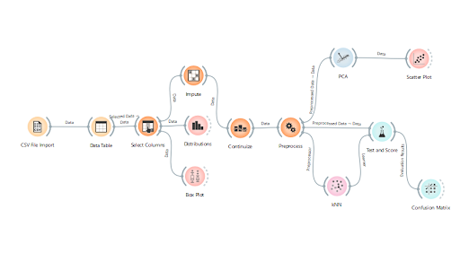
Fig. 1 Gambar 1. Alur kerja lengkap Orange Data Mining — dari pemuatan data CSV hingga evaluasi model KNN dan visualisasi.#
Secara garis besar, alur kerja terbagi menjadi tiga jalur:
Jalur Utama (Preprocessing → Model): CSV File Import → Data Table → Select Columns → Distributions → Box Plot → Impute → Continuize → Preprocess → kNN → Test and Score → Confusion Matrix
Jalur Visualisasi Eksplorasi: Select Columns → Box Plot
Jalur Visualisasi Dimensi: Preprocess → PCA → Scatter Plot
4. Penjelasan Node dan Setup#
4.1 Node CSV File Import#
Node CSV File Import adalah titik masuk data ke dalam alur kerja. Node ini bertugas membaca file dataset dari penyimpanan lokal.
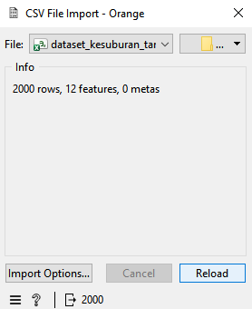
Fig. 2 Gambar 2. Node CSV File Import — dialog pemilihan file dataset.#
Cara Setup:
Dari panel Widgets di sebelah kiri, cari File atau CSV File Import di kategori Data.
Seret node ke kanvas (canvas) Orange.
Klik dua kali node tersebut untuk membuka dialog.
Klik tombol Browse (…) dan pilih file
dataset_kesuburan_tanah_missing.xlsx.Orange akan otomatis mendeteksi delimiter dan tipe data setiap kolom.
Periksa pratinjau data — pastikan semua kolom terbaca dengan benar.
Klik OK.
Output node ini berupa Data yang akan dialirkan ke node berikutnya.
4.2 Node Data Table#
Node Data Table berfungsi menampilkan data dalam format tabel sehingga dapat diperiksa secara visual sebelum diproses lebih lanjut.
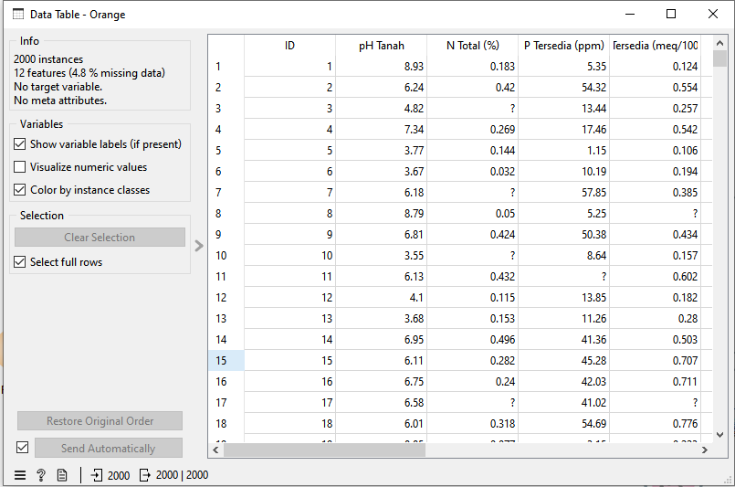
Fig. 3 Gambar 3. Node Data Table — pratinjau seluruh isi dataset beserta nilai yang hilang.#
Cara Setup:
Seret node Data Table dari panel Widgets kategori Data ke kanvas.
Hubungkan output Data dari node CSV File Import ke input node Data Table dengan menarik garis penghubung.
Klik dua kali untuk membuka tampilan tabel.
Di sini Anda dapat memeriksa isi data, termasuk melihat sel yang kosong (missing values) yang ditandai dengan warna berbeda atau tanda tanya.
Note
Node Data Table juga memungkinkan pemilihan baris tertentu. Output Selected Data yang terhubung ke node berikutnya akan meneruskan data yang dipilih (atau seluruh data jika tidak ada seleksi).
4.3 Node Select Columns#
Node Select Columns berfungsi menentukan peran setiap kolom: mana yang menjadi fitur, target, atau meta.
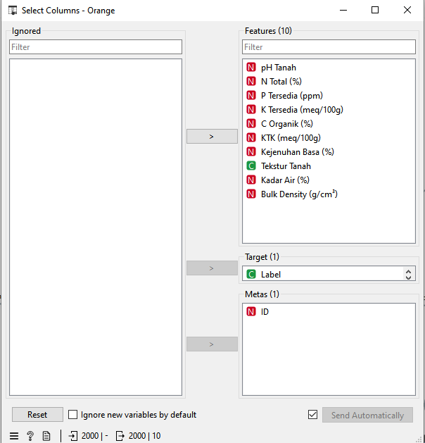
Fig. 4 Gambar 4. Node Select Columns — pengaturan peran kolom (Feature, Target, Meta).#
Cara Setup:
Seret node Select Columns dari panel Widgets kategori Data.
Hubungkan output Data dari Data Table ke input node ini.
Klik dua kali untuk membuka dialog pengaturan kolom.
Atur peran kolom sebagai berikut menggunakan drag-and-drop antar panel:
Kolom |
Peran yang Diatur |
|---|---|
ID |
Meta — tidak digunakan dalam perhitungan model |
pH |
Features — fitur input model |
N Total |
Features — fitur input model |
P Tersedia |
Features — fitur input model |
K Tersedia |
Features — fitur input model |
C Organik |
Features — fitur input model |
Tekstur Tanah |
Features — fitur input model |
Label |
Target — variabel yang ingin diprediksi |
Klik OK.
Important
Mengatur kolom ID sebagai Meta sangat penting agar nilai numerik ID tidak dianggap sebagai fitur oleh model, yang dapat menyebabkan hasil evaluasi yang tidak valid (data leakage).
Dari node ini, data mengalir ke node Distributions untuk dianalisis lebih lanjut.
4.4 Node Box Plot (Jalur Eksplorasi)#
Node Box Plot digunakan untuk memvisualisasikan distribusi dan sebaran nilai setiap fitur numerik, sekaligus mengidentifikasi keberadaan outlier.
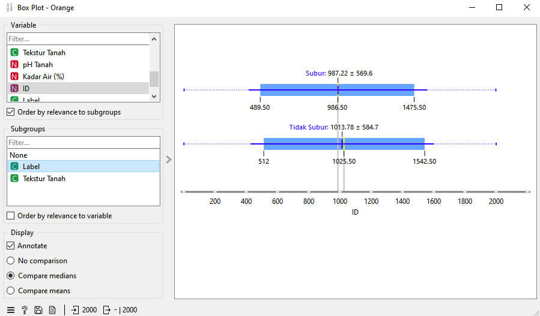
Fig. 5 Gambar 5. Node Box Plot — visualisasi sebaran dan outlier pada tiap fitur.#
Cara Setup:
Seret node Box Plot dari panel Widgets kategori Visualize.
Hubungkan output Data dari Distributions ke input node Box Plot.
Klik dua kali untuk membuka visualisasi.
Pilih variabel yang ingin divisualisasikan dari dropdown Variable.
Aktifkan opsi Order by Median untuk memudahkan perbandingan antar kelas.
Note
Dari node Distributions, data diteruskan ke Box Plot sebelum masuk ke tahap Impute untuk memastikan visualisasi outlier pada data asli terlihat jelas.
4.5 Node Distributions (Jalur Utama)#
Node Distributions menampilkan histogram distribusi frekuensi setiap fitur, membantu memahami bentuk sebaran data (normal, miring kiri/kanan, bimodal, dll.).
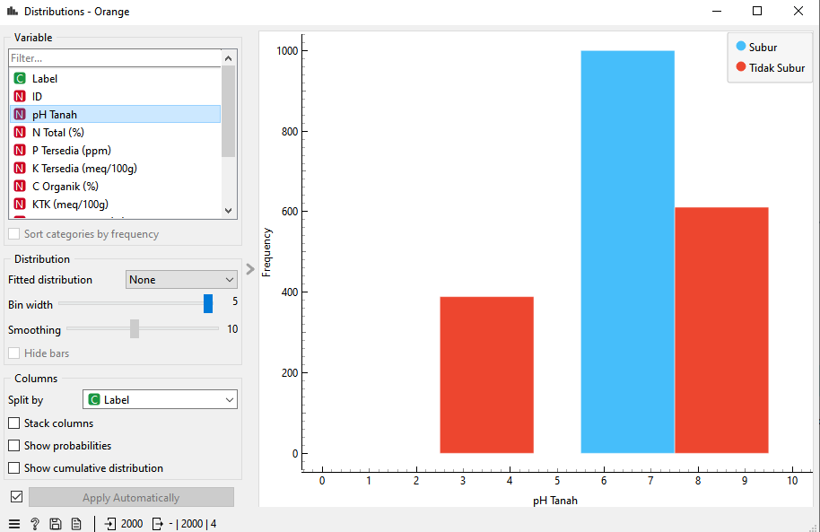
Fig. 6 Gambar 6. Node Distributions — histogram distribusi frekuensi fitur-fitur tanah.#
Cara Setup:
Seret node Distributions dari panel Widgets kategori Visualize.
Hubungkan output Data dari Select Columns ke input node Distributions.
Klik dua kali untuk membuka histogram.
Pilih fitur yang ingin diamati dari dropdown Variable.
Aktifkan Show Continuous Distribution untuk menampilkan kurva distribusi.
Output Data dari node ini diteruskan ke tahap Box Plot.
4.6 Node Impute#
Node Impute menangani nilai-nilai yang hilang (missing values) dalam dataset agar tidak mengganggu proses pelatihan model.
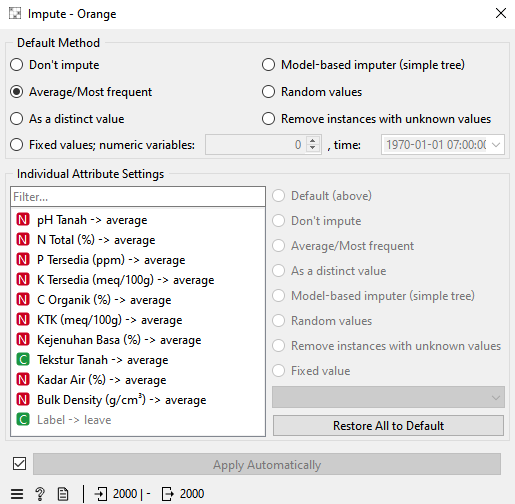
Fig. 7 Gambar 7. Node Impute — pengaturan metode pengisian nilai kosong (Average/Most Frequent).#
Cara Setup:
Seret node Impute dari panel Widgets kategori Preprocess.
Hubungkan output Data dari Box Plot ke input node Impute.
Klik dua kali untuk membuka dialog pengaturan.
Pada bagian Default Method, pilih Average / Most Frequent:
Untuk kolom numerik (N Total, C Organik): nilai kosong diisi dengan rata-rata kolom.
Untuk kolom kategorikal: nilai kosong diisi dengan nilai yang paling sering muncul.
Klik OK.
Note
Metode Average dipilih karena merupakan pilihan yang aman dan tidak memperkenalkan bias besar pada distribusi data. Nilai kosong pada N Total dan C Organik akan terisi secara otomatis.
4.7 Node Continuize#
Node Continuize mengubah variabel kategorikal (bertipe teks) menjadi representasi numerik agar dapat diproses oleh algoritma KNN yang berbasis jarak.
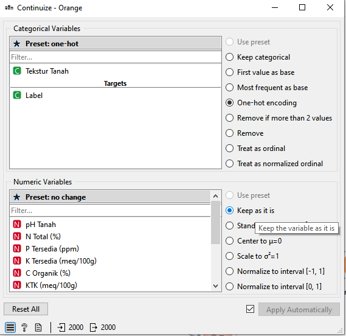
Fig. 8 Gambar 8. Node Continuize — pengaturan One-Hot Encoding untuk variabel Tekstur Tanah.#
Cara Setup:
Seret node Continuize dari panel Widgets kategori Preprocess.
Hubungkan output Data dari Impute ke input node Continuize.
Klik dua kali untuk membuka dialog pengaturan.
Pada kolom Tekstur Tanah, pilih metode One-Hot Encoding (atau “First value as base”).
Klik OK.
Mengapa One-Hot Encoding? KNN menghitung jarak antar titik data menggunakan rumus matematis. Data teks seperti “Lempung” atau “Pasir” tidak bisa dihitung jaraknya secara langsung. One-Hot Encoding mengubah satu kolom teks menjadi beberapa kolom biner (0 atau 1):
Tekstur Tanah |
Lempung |
Pasir |
Debu |
|---|---|---|---|
Lempung |
1 |
0 |
0 |
Pasir |
0 |
1 |
0 |
Debu |
0 |
0 |
1 |
4.8 Node Preprocess#
Node Preprocess merupakan hub preprocessing yang mengintegrasikan beberapa langkah transformasi data sekaligus, terutama normalisasi fitur.
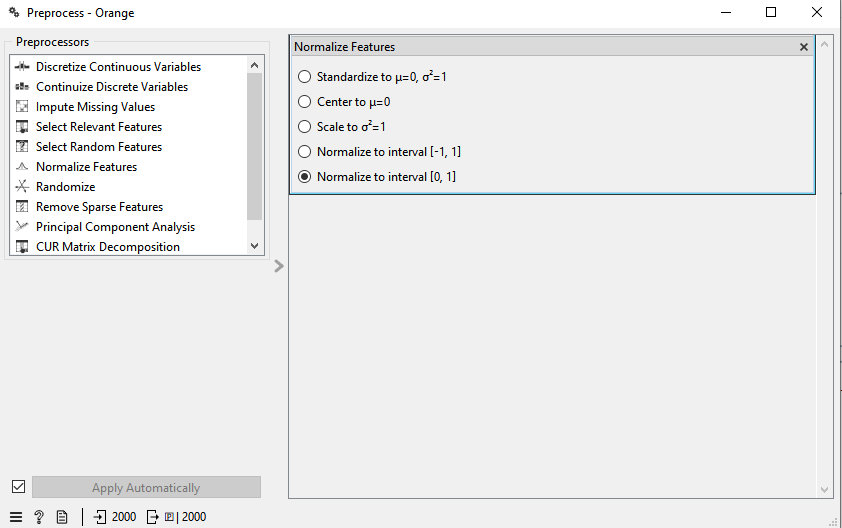
Fig. 9 Gambar 9. Node Preprocess — pengaturan normalisasi Z-score pada seluruh fitur.#
Cara Setup:
Seret node Preprocess dari panel Widgets kategori Preprocess.
Hubungkan output Data dari Continuize ke input node Preprocess.
Klik dua kali untuk membuka dialog.
Tambahkan preprocessor Normalize Features dengan klik tombol + atau seret dari panel kiri.
Pilih metode: Standardize (Z-score normalization)
Rumus: \(z = \dfrac{x - \mu}{\sigma}\)
Setiap fitur diubah agar memiliki rata-rata = 0 dan standar deviasi = 1.
Klik OK.
Important
Normalisasi adalah langkah wajib untuk KNN. Tanpa normalisasi, fitur dengan satuan atau skala besar (misalnya K Tersedia dalam ppm yang bernilai ratusan) akan mendominasi perhitungan jarak Euclidean, membuat fitur lain seperti pH (skala 0–14) tidak berpengaruh signifikan terhadap hasil klasifikasi.
Dari node Preprocess, data mengalir ke dua jalur:
Jalur kNN (jalur evaluasi model)
Jalur PCA → Scatter Plot (jalur visualisasi dimensi)
4.9 Node PCA → Scatter Plot (Jalur Visualisasi)#
PCA (Principal Component Analysis) mereduksi dimensi data berdimensi tinggi menjadi 2–3 dimensi agar dapat divisualisasikan.
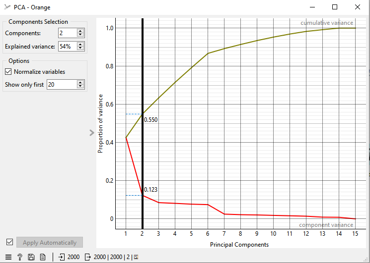
Fig. 10 Gambar 10. Node PCA — reduksi dimensi data ke komponen utama (PC1 dan PC2).#
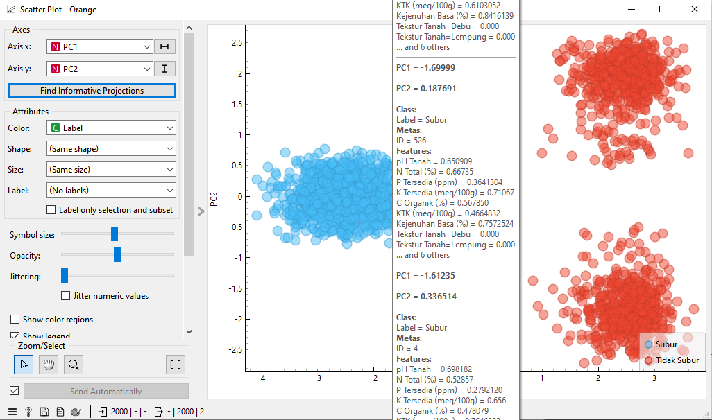
Fig. 11 Gambar 11. Scatter Plot — visualisasi pemisahan kelas Subur dan Tidak Subur di ruang PCA.#
Cara Setup PCA:
Seret node PCA dari panel Widgets kategori Unsupervised.
Hubungkan output Preprocessed Data dari Preprocess ke input node PCA.
Klik dua kali dan atur jumlah komponen: 2 (untuk visualisasi 2D).
Klik Apply.
Cara Setup Scatter Plot:
Seret node Scatter Plot dari panel Widgets kategori Visualize.
Hubungkan output Data dari PCA ke input node Scatter Plot.
Atur sumbu X: PC1 dan sumbu Y: PC2.
Atur warna titik berdasarkan kolom Label untuk melihat pemisahan kelas.
Note
Scatter Plot PCA bersifat visualisasi eksplorasi — digunakan untuk melihat apakah dua kelas (Subur dan Tidak Subur) sudah terpisah secara visual di ruang PCA, sebelum model KNN dilatih.
4.10 Node kNN (Learner)#
Node kNN mendefinisikan arsitektur dan parameter algoritma K-Nearest Neighbors.
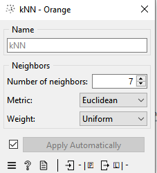
Fig. 12 Gambar 12. Node kNN — pengaturan k=7 dengan metrik Euclidean.#
Cara Setup:
Seret node kNN dari panel Widgets kategori Model.
Node kNN tidak perlu dihubungkan ke data secara langsung — ia berfungsi sebagai Learner yang dioper ke node Test and Score.
Klik dua kali untuk membuka dialog dan atur parameter:
Parameter |
Nilai |
Keterangan |
|---|---|---|
Number of Neighbors (k) |
7 |
Jumlah tetangga terdekat yang dipertimbangkan |
Metric |
Euclidean |
Rumus perhitungan jarak antar titik |
Weight |
Uniform |
Semua tetangga memiliki bobot yang sama |
Klik OK.
Cara Kerja KNN:
Untuk setiap data uji, dihitung jarak Euclidean ke seluruh data latih. Sebanyak k = 7 tetangga terdekat dipilih, dan kelas mayoritas di antara 7 tetangga tersebut menjadi hasil prediksi.
4.11 Node Test and Score#
Node Test and Score mengukur performa model KNN secara objektif menggunakan metode evaluasi yang valid.
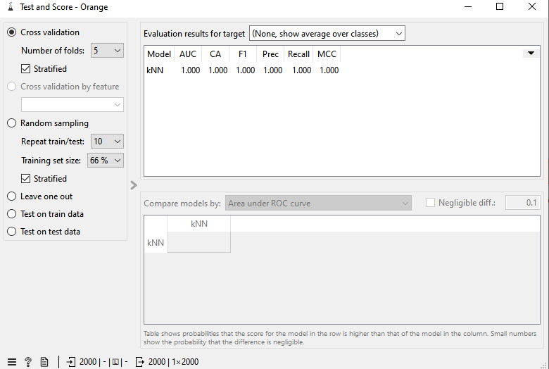
Fig. 13 Gambar 13. Node Test and Score — hasil Cross Validation 5-fold dengan metrik evaluasi.#
Cara Setup:
Seret node Test and Score dari panel Widgets kategori Evaluate.
Hubungkan dua input:
Output Preprocessed Data dari node Preprocess → input Data
Output Learner dari node kNN → input Learner
Klik dua kali untuk membuka dialog.
Pilih metode evaluasi: Cross Validation
Atur Number of Folds:
5Klik Apply.
Penjelasan Cross Validation 5-Fold:
Data dibagi menjadi 5 bagian (fold) yang sama besar. Model dilatih sebanyak 5 kali — setiap kali menggunakan 4 bagian sebagai data latih dan 1 bagian sebagai data uji secara bergantian. Hasil akhir adalah rata-rata dari 5 percobaan, sehingga evaluasi lebih stabil dan tidak bias.
4.12 Node Confusion Matrix#
Node Confusion Matrix memberikan visualisasi detail mengenai hasil prediksi dibandingkan dengan kelas aktual.
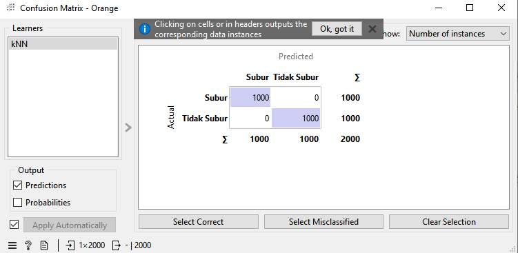
Fig. 14 Gambar 14. Node Confusion Matrix — seluruh prediksi tepat berada di diagonal utama.#
Cara Setup:
Seret node Confusion Matrix dari panel Widgets kategori Evaluate.
Hubungkan output Evaluation Results dari node Test and Score ke input node Confusion Matrix.
Klik dua kali untuk membuka visualisasi.
Pilih model kNN dari dropdown jika tersedia lebih dari satu model.
Cara Membaca Confusion Matrix:
Prediksi: Subur |
Prediksi: Tidak Subur |
|
|---|---|---|
Aktual: Subur |
TP (True Positive) |
FN (False Negative) |
Aktual: Tidak Subur |
FP (False Positive) |
TN (True Negative) |
Pada hasil percobaan ini, seluruh nilai berada pada diagonal utama (TP dan TN = jumlah sampel), sedangkan nilai FP dan FN adalah 0. Ini menunjukkan model tidak membuat kesalahan prediksi sama sekali.
5. Hasil Evaluasi#
Berdasarkan pengujian menggunakan Cross Validation 5-fold pada node Test and Score, diperoleh hasil sebagai berikut:
Metrik Evaluasi |
Nilai |
Keterangan |
|---|---|---|
Accuracy (CA) |
1.000 |
Model mengklasifikasikan 100% data dengan benar |
Precision |
1.000 |
Tidak ada prediksi “Subur” yang sebenarnya “Tidak Subur” |
Recall |
1.000 |
Seluruh sampel tanah subur berhasil terdeteksi |
F1-Score |
1.000 |
Nilai harmonik sempurna antara Precision dan Recall |
6. Analisis dan Kesimpulan#
Mengapa Preprocessing Bertahap Sangat Penting untuk KNN?#
KNN adalah algoritma berbasis jarak — ia tidak “belajar” parameter seperti model lain, melainkan hanya membandingkan jarak antar titik data. Ini berarti kualitas data sangat menentukan kualitas prediksi:
Langkah |
Node |
Tujuan |
|---|---|---|
Imputasi |
Impute |
Mengisi nilai kosong agar tidak ada baris yang terbuang |
Konversi Kategorikal |
Continuize |
Mengubah teks menjadi angka agar jarak dapat dihitung |
Normalisasi |
Preprocess |
Menyamakan skala semua fitur agar kontribusinya proporsional |
Ringkasan Alur Node#
[CSV File Import]
│ Data
▼
[Data Table]
│ Selected Data
▼
[Select Columns]
│ Data
▼
[Distributions]
│ Data
▼
[Box Plot]
│ Data
▼
[Impute]
│ Data
▼
[Continuize]
│ Data
▼
[Preprocess] ──── Data ────► [PCA] ──► [Scatter Plot]
│ Preprocessed Data
├──────────────────────────────► [kNN (Learner)]
│ │ Learner
└──────────────────────────────► [Test and Score]
│ Evaluation Results
▼
[Confusion Matrix]
Penggunaan algoritma KNN dengan parameter \(k=7\) dan metrik Euclidean, dikombinasikan dengan pipeline preprocessing yang terstruktur (Impute → Continuize → Normalize), terbukti sangat efektif untuk dataset kesuburan tanah ini. Hasil evaluasi menunjukkan akurasi sempurna 100%, yang mengindikasikan pola parameter kimia tanah sangat konsisten dan terstruktur dengan baik antara kelas Subur dan Tidak Subur.